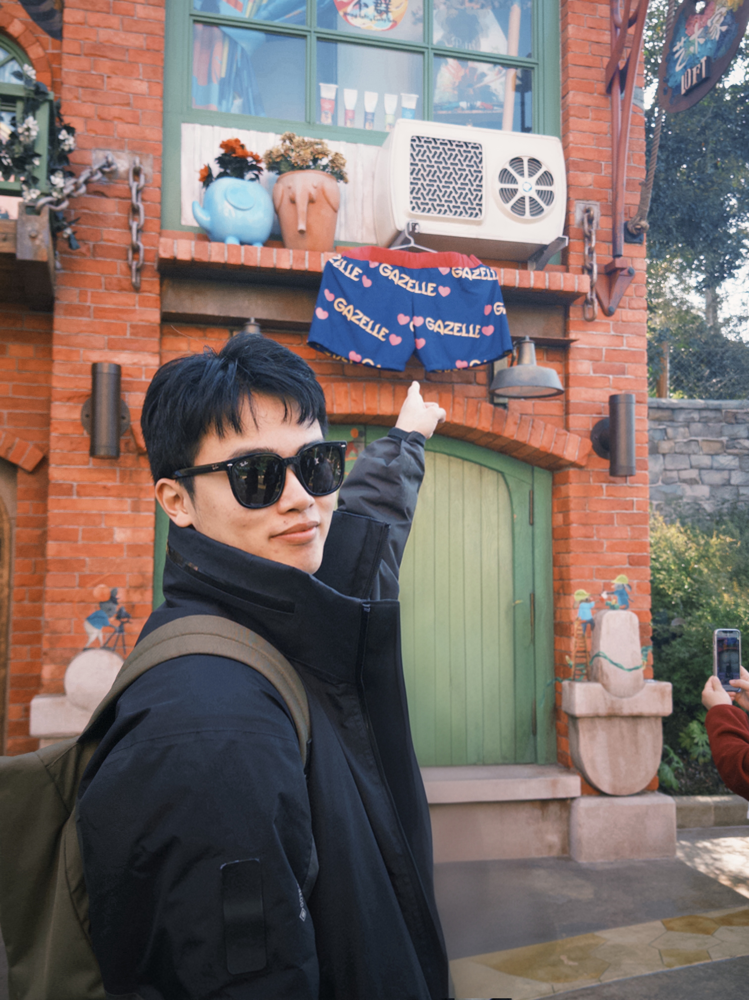

Lingxuan Wu (吴凌轩)EngD student
Room 1-508, FIT Building |
 |
Biography
I am a third-year PhD Candidate of TSAIL Group in the Department of Computer Science and Technology, Tsinghua University, advised by Prof. Jun Zhu and Prof. Hang Su. I also work closely with Dr. Xiao Yang. Previously, I received my B.S. degree from the School of Artificial Intelligence of Beihang University in June 2023.
My research interests lie primarily in the area of embodied intelligence and AI safety. My progresses include:
-
Developing the RDT series (Model Arch., Training Infra. & Large-Scale Training): a series of embodied foundation models for manipulation that progressively scale models and data toward general-purpose robot control
.
- Proposing an active vision framework to improve the robustness of embodied perception, including EAD and Rein-EAD.
Currently, I work on post-training and safety alignment for emboided manipulation.
Selected Research
Embodied RL & Safety Alignment:-
PACT: Self-Evolving Physical Safety Alignment for Diffusion Policies in Embodied Manipulation
Lingxuan Wu, Zijian Zhu, Lizhong Wang, Chengyang Ying, Huayu Chen, Xiao Yang, Fangming Liu, Jun Zhu
International Conference on Machine Learning (ICML), 2026
Spotlight (Accept rate~2.2%)
[arXiv] [Code]
-
RDT-1B: a Diffusion Foundation Model for Bimanual Manipulation
Songming Liu*, Lingxuan Wu*, Bangguo Li, Hengkai Tan, Huayu Chen, Zhengyi Wang, Ke Xu, Hang Su, Jun Zhu
International Conference on Learning Representations (ICLR), 2025
[Website] [arXiv] [Code: 17.0k Stars] [Model] [Dataset] -
H-RDT: Human Manipulation Enhanced Bimanual Robotic Manipulation
Hongzhe Bi, Lingxuan Wu, Tianwei Lin, Hengkai Tan, Zhizhong Su, Hang Su, Jun Zhu
AAAI Conference on Artificial Intelligence (AAAI), 2026
[Website] [arXiv] [Code] [Model] -
RDT2: Exploring the Scaling Limit of UMI Data Towards Zero-Shot Cross-Embodiment Generalization
Songming Liu*, Bangguo Li*, Kai Ma*, Lingxuan Wu*, Hengkai Tan, Xiao Ouyang, Hang Su, Jun Zhu
International Conference on Machine Learning (ICML), 2026
[Website] [arXiv] [Code: 770 Stars] [Model]
-
Embodied Active Defense: Leveraging Recurrent Feedback to Counter Adversarial Patches
Lingxuan Wu, Xiao Yang, Yinpeng Dong, Liuwei Xie, Hang Su, Jun Zhu
International Conference on Learning Representations (ICLR), 2024
[arXiv] [Code] -
Reinforced Embodied Active Defense: Exploiting Adaptive Interaction for Robust Visual Perception in Adversarial 3D Environments
Xiao Yang*, Lingxuan Wu*, Lizhong Wang, Chengyang Ying, Hang Su, Jun Zhu
IEEE Transactions on Pattern Analysis & Machine Intelligence (TPAMI) 47, no. 10 (2025): 9078-9094
[arXiv] [Code]
Honors & Awards
- '84' Future Innovation Scholarship (2nd Prize), 2024
- China National Scholarship, 2022
- Model student of Beihang University for three years, 2020-2022
Services
Teaching
2024 Spring, TA in Statistical Learning Theory and Applications, instructed by Prof. Jun Zhu2024 & 2025 Spring, TA in Statistical Machine Learning, instructed by Prof. Hang Su